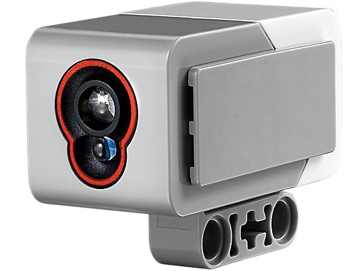
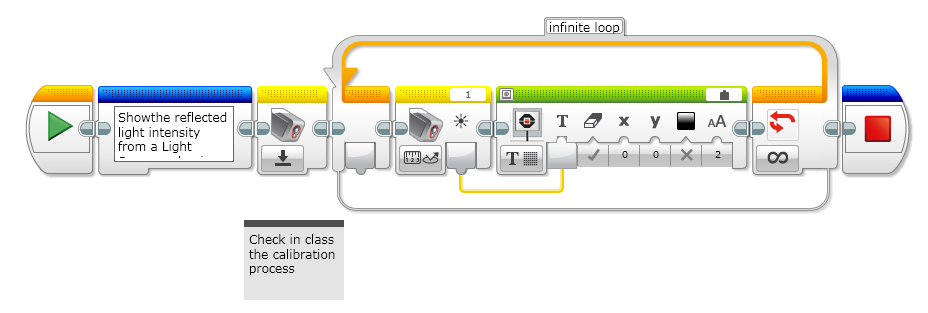

The digital EV3 Color Sensor distinguishes between eight different colors. It also serves as a light sensor by detecting light intensities. Students can build color sorting and line-following robots, experiment with light reflection of different colors, and gain experience with a technology that is widely used in industries like recycling, agriculture and packaging. The sensor measures reflected red light and ambient light, from darkness to very bright sunlight. It is capable of detecting eight colors. It cantell the difference between color or black and white, or between blue, green, yellow, red, white and brown.

The range of values for a light sensor measuring the reflected light intensity are:
-
Minimum: 0, Black
-
Maximum: 100, White
How to use the sensor Example 1: Measure the reflected light intensity from the EV3 light sensor.

package ev3dev.sensors.ev3;
import lejos.hardware.port.SensorPort;
import lejos.robotics.SampleProvider;
import lejos.utility.Delay;
public class ColorSensorDemo {
//Robot Configuration
private static EV3ColorSensor color1 = new EV3ColorSensor(SensorPort.S1);
//Configuration
private static int HALF_SECOND = 500;
public static void main(String[] args) {
//Red Mode
System.out.println("Switching to Red Mode");
SampleProvider sp = color1.getRedMode();
int sampleSize = sp.sampleSize();
float[] sample = new float[sampleSize];
// Takes some samples and prints them
for (int i = 0; i < 10; i++) {
sp.fetchSample(sample, 0);
System.out.println("N=" + i + " Sample=" + (int)sample[0]);
Delay.msDelay(HALF_SECOND);
}
//Color ID
System.out.println("Switching to Color ID Mode");
sp = color1.getColorIDMode();
sampleSize = sp.sampleSize();
sample = new float[sampleSize];
// Takes some samples and prints them
for (int i = 0; i < 10; i++) {
sp.fetchSample(sample, 0);
System.out.println("N=" + i + " Sample={}" + (int)sample[0]);
Delay.msDelay(HALF_SECOND);
}
//Ambient Mode
System.out.println("Switching to Ambient Mode");
sp = color1.getAmbientMode();
sampleSize = sp.sampleSize();
sample = new float[sampleSize];
// Takes some samples and prints them
for (int i = 0; i < 10; i++) {
sp.fetchSample(sample, 0);
System.out.println("N=" + i + " Sample={}" + (int)sample[0]);
Delay.msDelay(HALF_SECOND);
}
//RGB
System.out.println("Switching to RGB Mode");
sp = color1.getRGBMode();
sampleSize = sp.sampleSize();
sample = new float[sampleSize];
// Takes some samples and prints them
for (int i = 0; i < 10; i++) {
sp.fetchSample(sample, 0);
System.out.println("N=" + i + " Sample={}" + (int)sample[0]);
System.out.println("N=" + i + " Sample={}" + (int)sample[1]);
System.out.println("N=" + i + " Sample={}" + (int)sample[2]);
Delay.msDelay(HALF_SECOND);
}
}
}